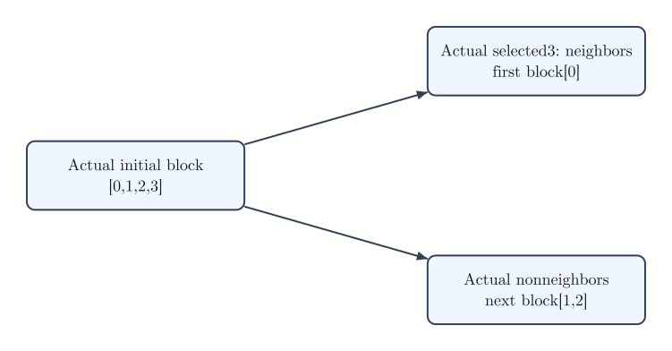
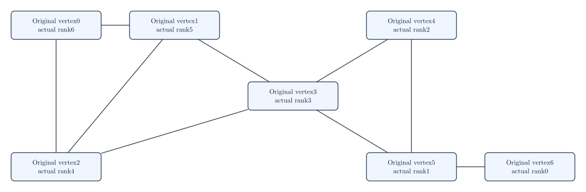
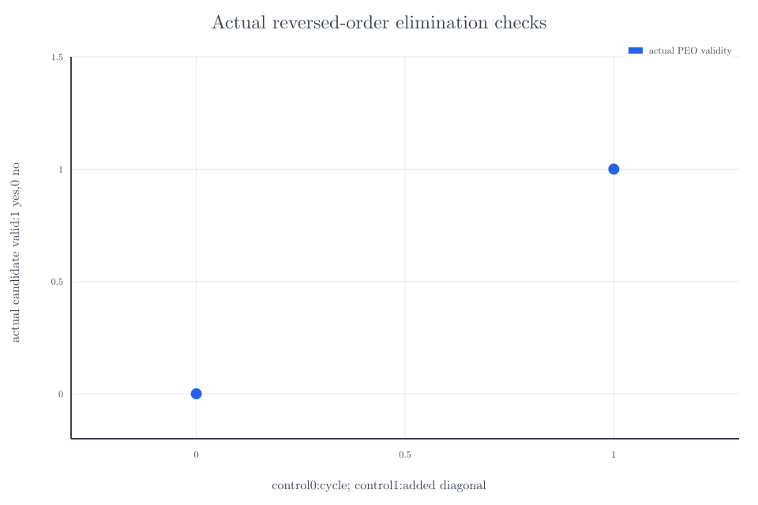
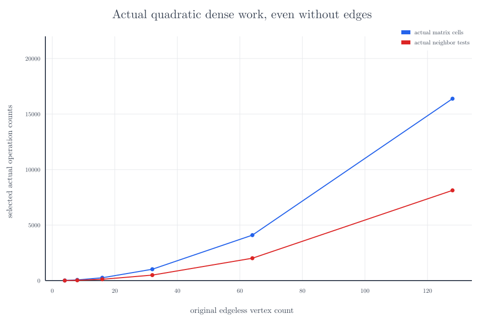

Lexicographic breadth-first search
Abstract
Lex-BFS refines an ordered partition after each selected vertex, prioritizing earlier adjacency distinctions. This report exposes the actual native partitions and classification decisions, retains the original seven-vertex example and checks the reversed order as a perfect-elimination candidate. The dense implementation performs quadratic scans; the linear-time complexity of specialized Lex-BFS implementations is not claimed for this code.
Ordered labels without rebuilding the display
Initially every vertex lies in one ordered block[0,...,n−1]. Select the last member of the first block, remove it, and split each remaining block into its neighbors followed by its nonneighbors, preserving member order within each part. Empty parts disappear. The first block represents the largest adjacency-history label; earlier selected neighbors have priority over later distinctions. Since members retain ascending order, exact label ties choose the largest remaining vertex. Thus the initial vertex is n−1, correcting the old header’s suggestion that selection starts at0.
An equivalent mathematical description gives each unvisited vertex the decreasing selection numbers of its previously selected neighbors, in chronological order, and chooses the lexicographically largest list. Partition splitting implements that label order without explicitly copying labels. It does not mean that this particular all-block dense scan is a linear-time implementation.
A tiny real split
In the four-vertex star with center0, vertex3 is selected first. Its actual neighbor0 becomes the first block, ahead of nonneighbors1,2. The diagram reads those actual captured blocks; no report-side refinement replay constructs the history.
#include <dm/dm.hpp>
int main() {
std::filesystem::create_directories("build");
auto t = dm::algorithms::lex_bfs_trace(4, {{1, 2, 3}, {0}, {0}, {0}});
std::print("| actual completed selections | actual selected vertex, initial sentinel minus1 | actual " "remaining ordered blocks |\n| ---: | ---: | --- |\n");
for (std::size_t k = 0; k < t.stages.size(); ++k) {
std::string blocks;
for (auto &b : t.stages[k].blocks) {
blocks += "[";
for (int v : b)
blocks += std::format("{} ", v);
blocks += "] ";
}
std::print("| {} | {} | {} |\n", k, t.stages[k].selected,
blocks.empty() ? "empty" : blocks);
}
auto &s = t.stages[1];
dm::graphics::Diagram d;
d.node("original", {0, 0}, "Actual initial block\n[0,1,2,3]").node(
"neighbor", {7, 2},
std::format("Actual selected{}: neighbors\nfirst block[{}]", s.selected,
s.blocks[0][0])).node("rest", {7, -2},
std::format("Actual nonneighbors\nnext block[{},{}]",
s.blocks[1][0],
s.blocks[1][1])).edge(
"original", "neighbor").edge("original", "rest").save_svg(
"build/lex_bfs_split.svg");
}| actual completed selections | actual selected vertex, initial sentinel minus1 | actual remaining ordered blocks |
|---|---|---|
| 0 | -1 | [0 1 2 3 ] |
| 1 | 3 | [0 ] [1 2 ] |
| 2 | 0 | [1 2 ] |
| 3 | 2 | [1 ] |
| 4 | 1 | empty |

Original seven-vertex graph
Retain adjacency rows(1,2),(0,2,3),(0,1,3),(1,2,4,5),(3,5),(3,4,6),(5). The deterministic order is6,5,4,3,2,1,0. The original report computed this order with the library but separately replayed partition refinement to plot block counts. The replacement reads the actual producing states and real neighbor tests. Partition counts can decrease when a singleton block is consumed, so “ever finer” is not a monotone count claim. The native undirected graph diagram labels each original identity and its real selection rank.
#include <dm/dm.hpp>
int main() {
std::filesystem::create_directories("build");
std::vector<std::vector<int>> g{{1, 2}, {0, 2, 3}, {0, 1, 3}, {1, 2, 4, 5},
{3, 5}, {3, 4, 6}, {5}};
auto t = dm::algorithms::lex_bfs_trace(7, g);
std::print("| actual selection rank | actual selected identity | actual remaining block count |\n| ---: " "| ---: | ---: |\n");
std::vector<std::size_t> rank(7);
for (std::size_t k = 0; k < t.analysis.order.size(); ++k) {
rank[t.analysis.order[k]] = k;
std::print("| {} | {} | {} |\n", k, t.analysis.order[k],
t.stages[k + 1].blocks.size());
}
std::print("\nActual dense matrix cells {}; actual input entries {}; actual membership tests {}.\n",
t.analysis.work.matrix_cells, t.analysis.work.adjacency_entries,
t.analysis.work.neighbor_tests);
std::vector<dm::geometry::Point2D> positions{{0, 4}, {5, 4}, {0, -2},
{10, 1}, {15, 4}, {15, -2},
{20, -2}};
dm::graphics::Diagram d;
for (int v = 0; v < 7; ++v)
d.node(std::to_string(v), {positions[v].x, positions[v].y},
std::format("Original vertex{}\nactual rank{}", v, rank[v]));
for (int u = 0; u < 7; ++u)
for (int v : g[u])
if (u < v)
d.link(std::to_string(u), std::to_string(v));
d.save_svg("build/lex_bfs_original.svg");
}| actual selection rank | actual selected identity | actual remaining block count |
|---|---|---|
| 0 | 6 | 2 |
| 1 | 5 | 2 |
| 2 | 4 | 2 |
| 3 | 3 | 2 |
| 4 | 2 | 2 |
| 5 | 1 | 1 |
| 6 | 0 | 0 |
Actual dense matrix cells 49; actual input entries 18; actual membership tests 21.

Reversal and perfect elimination
A perfect-elimination order requires every vertex’s later neighbors to form a clique. Any graph with such an order is chordal; reversing a Lex-BFS order gives such an order when the graph is chordal. An arbitrary failed candidate order alone does not establish nonchordality, but the reversed Lex-BFS candidate has the relevant equivalence. The checker below explicitly tests later-neighbor pairs and can return a real vertex and two nonadjacent later-neighbor identities as a witness. This separate cubic diagnostic is not counted as Lex-BFS work.
The four-cycle fails; adding diagonal0–2 makes the graph chordal. Both orders are generated by the native Lex-BFS call, reversed explicitly, then checked. The figure plots actual check outcomes, while the table prints the exact witnesses; no simulated chordality classifier is introduced.
#include <dm/dm.hpp>
int main() {
std::filesystem::create_directories("build");
std::vector<std::vector<int>> cycle{{1, 3}, {0, 2}, {1, 3}, {0, 2}}, chorded = cycle;
chorded[0].push_back(2);
chorded[2].push_back(0);
std::vector<double> x, y;
std::print("| original control | actual reversed Lex-BFS is PEO | actual witness vertex, minus1 if " "valid | actual first witness neighbor | actual second witness neighbor | actual checked " "neighbor pairs |\n| --- | --- | ---: | ---: | ---: | ---: |\n");
int k = 0;
for (const auto &g : {cycle, chorded}) {
auto o = dm::algorithms::lex_bfs(4, g);
std::reverse(o.begin(), o.end());
auto c = dm::algorithms::check_perfect_elimination_order(4, g, o);
std::print("| {} | {} | {} | {} | {} | {} |\n",
k ? "cycle plus diagonal" : "four-cycle", c.valid, c.vertex,
c.left, c.right, c.neighbor_pairs);
x.push_back(k++);
y.push_back(c.valid ? 1 : 0);
}
auto p = dm::graphics::RPlot::create();
p.points(x, y, "actual PEO validity", {37, 99, 235}, 7).x_limits(-.3, 1.3).y_limits(-.2, 1.5).title("Actual reversed-order elimination checks").x_label("control0:cycle; control1:added diagonal").y_label("actual candidate valid:1 yes,0 no").save_svg("build/lex_bfs_peo.svg");
}| original control | actual reversed Lex-BFS is PEO | actual witness vertex, minus1 if valid | actual first witness neighbor | actual second witness neighbor | actual checked neighbor pairs |
|---|---|---|---|---|---|
| four-cycle | false | 1 | 0 | 2 | 1 |
| cycle plus diagonal | true | -1 | -1 | -1 | 2 |

The actual complexity of this implementation
The native matrix initializes n^2 cells, then every selection classifies every remaining vertex exactly once. Thus the actual number of membership tests is
Together with complete input-entry scans and dense construction, this implementation costs O(n2+E) time and O(n2+n) runtime storage. Specialized refinable-set implementations can achieve the paper’s O(n+E), but the old header’s linear-time claim did not describe these dense scans. Empty graphs below isolate this distinction: E is zero yet the actual membership count is quadratic. The plotted matrix-cell and membership counts are selected logical operations, not CPU instructions, elapsed time or RAM measurements.
#include <dm/dm.hpp>
int main() {
std::filesystem::create_directories("build");
std::vector<double> x, cells, tests;
std::print("| original edgeless vertices | actual dense initialized cells | actual membership tests | " "actual emitted vertices | actual input entries |\n| ---: | ---: | ---: | ---: | ---: |\n");
for (int n : {4, 8, 16, 32, 64, 128}) {
auto a =
dm::algorithms::lex_bfs_analyze(n, std::vector<std::vector<int>>(n));
std::print("| {} | {} | {} | {} | {} |\n", n, a.work.matrix_cells,
a.work.neighbor_tests, a.work.emitted,
a.work.adjacency_entries);
x.push_back(n);
cells.push_back(a.work.matrix_cells);
tests.push_back(a.work.neighbor_tests);
}
auto p = dm::graphics::RPlot::create();
p.line(x, cells, "actual matrix cells", {37, 99, 235}, 2).points(
x, cells, "", {37, 99, 235}, 4).line(x, tests, "actual neighbor tests",
{220, 38, 38}, 2).points(
x, tests, "", {220, 38, 38}, 4).y_limits(0, 22000).title(
"Actual quadratic dense work, even without edges").x_label(
"original edgeless vertex count").y_label("selected actual operation counts").save_svg("build/lex_bfs_work.svg");
}| original edgeless vertices | actual dense initialized cells | actual membership tests | actual emitted vertices | actual input entries |
|---|---|---|---|---|
| 4 | 16 | 6 | 4 | 0 |
| 8 | 64 | 28 | 8 | 0 |
| 16 | 256 | 120 | 16 | 0 |
| 32 | 1024 | 496 | 32 | 0 |
| 64 | 4096 | 2016 | 64 | 0 |
| 128 | 16384 | 8128 | 128 | 0 |

Contracts and verification
Vertex count is nonnegative, adjacency has exactly n rows and every endpoint is in0..n−1. These complete guards precede matrix allocation. Historical normalization is explicit: asymmetric entries become undirected edges, duplicate entries coalesce, loops are ignored, and original rows remain owned in trace. Ties preserve the old deterministic largest-member choice. Empty and disconnected graphs are valid. The separate elimination checker requires a full valid permutation.
The capture admits exactly E+2*n2+n+1 logical records before copies/evaluation: E original entries, n2 matrix cells, n+1 stage records, n*(n+1)/2 remaining-member slots and n*(n−1)/2 actual classifications. It excludes row/block headers, scalar fields, capacities, result/runtime copies and bytes/RAM. Default cap is one million;0 disables only that optional cap. Captures own their data and use one real producer execution.
Native tests exhaust all 1024 five-vertex simple graphs against independent
explicit-label search and brute-force perfect-elimination permutations, and
check normalization, real partitions, counts, witnesses, quotas and ownership.
The ten-report batch passed 101 native CTest cases, 34 directly instrumented
ASan/UBSan cases, 103 compiled/executed public examples, 515/515 scoped file
definitions plus 10 exact LCG class definitions, and ten representative clangd
hovers. Independent Python integer/Fraction, explicit-label graph search,
quadratic sequence DP and full weighted-stump references passed 69430 records
across all ten topics, including a separately fitted held-out Iris model. Frozen
ordinary compatibility passed 1000 Lex-BFS orders, 1000 library sorts, 100 LBG
codebooks, 100 complete five-round LogitBoost ensembles and 200 LLL bases;
corrected LBG final labels/objectives are intentionally excluded from historical
compatibility. All 4 complete programs executed and all 4 native figures were
rendered and visually reviewed, with clipped legends corrected and rerun.
HTML/Markdown computed-result and figure-byte checks gate legacy retirement.
Repeatable receipts are retained in build/mepml-conversion/batch-204-213/.
References
D. J. Rose, R. E. Tarjan and G. S. Lueker(1976), Algorithmic Aspects of Vertex Elimination on Graphs, SIAM Journal on Computing5(2),266–283. The graph-theoretic relation is retained; its linear-time implementation bound is explicitly distinguished from this library’s dense partition scan and separate cubic elimination checker.